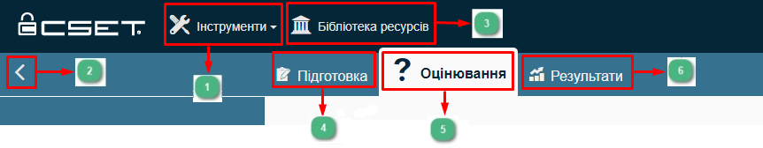
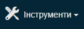
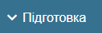

Оцінювання, вибір та визначення засобів контролю безпеки для інформаційних систем, які обробляють, зберігають або передають державну інформацію, у відповідності до вимог стандарту NIST SP 800-53 Revision 3 допомагає державному та приватному секторам у вирішенні проблем управління ризиками кібербезпеки в економічно ефективний спосіб.
Для проведення оцінювання у CSET у відповіності до вимог даного стандарту використовується відповідний інструментар, опис якого наведено нижче.
Примітка: У наведених нижче інструкціях показані знімки екрану, зроблені на основі вибраної вкладки Оцінювання у верхньому рядку меню.


Інструменти

З випадаючого списку Інструменти розгортається меню, в якому відображаються наступні опції:
{kind=link}
Для отримання більш детальної інформації про опції меню Інструменти ознайомтеся з документом: CSET® Керівництво користувача. Загальний посібник.
Меню бічної панелі Розгорнути/Згорнути
Ця функція розгортає меню бічної панелі, яке містить посилання на наступні функції оцінювання:
{kind=link}

Бібліотека ресурсів
Бібліотека ресурсів пропонує доступ до колекції методичних (інструктивних) документів та довідкових матеріалів CSET з кібербезпеки.


Підготовчий етап є першою частиною процесу оцінювання і включає наступний збір інформації, яка відображається:
• у полях для збору інформації про користувача у формі Конфігурація оцінювання на вкладці Підготовка;
•у полях форми Інформація про оцінювання, де збирається і відображається інформація, що містить відомості про демографічні показники (наприклад, сектор економіки та галузь, період проведення оцінки, назву організації контактної особи, бізнес-одиниця (підрозділ) компанії та/або установа і таке інше);
•поля решта екранних форм вкладки Підготовка для проведення оцінювання.
У даному розділі відображається сторінка вкладки Оцінювання, де наведена інформація у вигляді переліку запитань для відповідного універсального набору заходів інформаційної безпеки, що здатний забезпечити належний рівень захищеності для невизначеного кола систем. Тутже зазначено відповідний рівень запитання.
Читати додатково:
підготовлено у редакторі Help & Manual 9.3.0